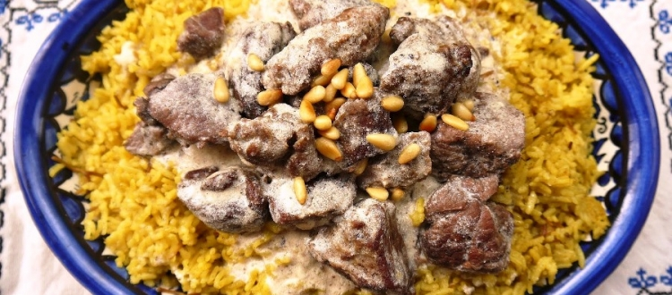

Mansaf

What is Mansaf?
Mansaf is the national dich of Jordend and is very famous in Saudi Arabia.
Ingredients
- 1 kilogram of Lamb shoulder meat, cut into pieces
- 4 cups of Water
- 2 tbsp of Vegetable oil
- 2 Medium Onions, finely chopped
- 1 cube of Maggi® Chicken Bouillon
- 0.75 of tsp Ground Black Pepper
- 0.75 of tsp Paprika powder
- 0.75 of tsp ground cumin
- 0.75 of tsp Coriander powder
- 0.75 of tsp Ground cloves
- 1 piece of Cinnamon stick
- 0.5 cup of Nuts, pine nuts, dried
- 0.5 cup of Almonds
- 3 tbsp of Parsley, fresh
For the sauce:
- 2.5 cups Yoghurt
- 1.5 tbsp Corn flour
Steps
Step 1
- Place the lamb pieces and water in a large saucepan, bring to boil and skim forth.
Step 2
- Heat the ghee or oil in a frying pan, add onions and cook for 4-5 mins until softened. Then add to the lamb in the pot.
Step 3
- Add MAGGI® Chicken Bouillon cubes, all the spices, and the cinnamon stick. Cover and simmer over low heat for 1 hour or until the meat is tender but still firm.
Step 4
- In a saucepan, combine yoghurt and corn flour. Bring to boil under constant stirring and simmer for 2 mins.
Step 5
- Stir the yoghurt sauce slowly into the pot of meat, and simmer uncovered over low heat for 5 mins. Taste and adjust the seasoning.
Step 6
- Spoon the meat mixture in a large bowl, garnish with the toasted pine seeds, almonds and parsely and serve with rice.
